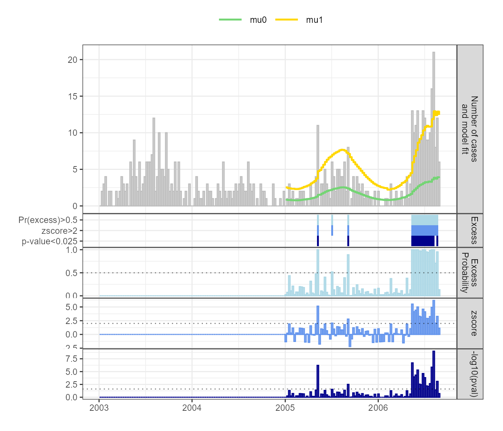
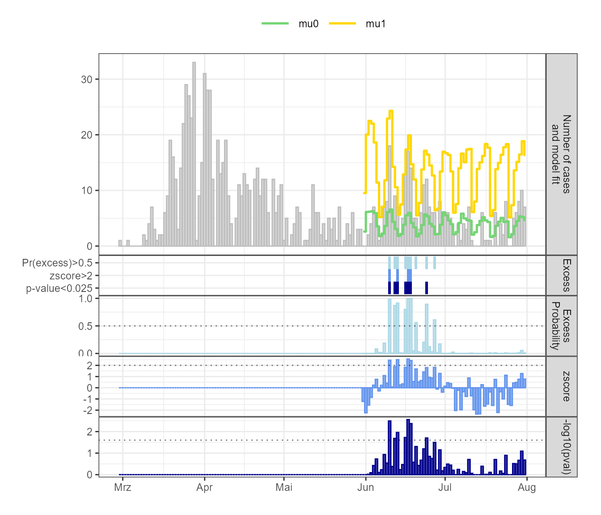
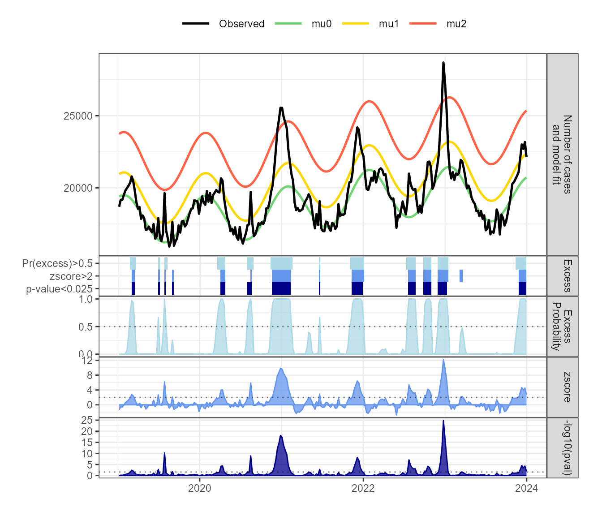

Excess count detection for epidemiological time series
Benedikt Zacher
2025-11-06
excode.RmdIntroduction
Excess count detection (excode) in epidemiological time series is an important part of public health surveillance systems. A variety of algorithms has been developed to identify events such as disease outbreaks or excess mortality. To this end, time series are analysed to detect unusually large (case) counts, that exceed what is normally expected in a certain time period and geographical region. The normal expectancy of cases in a current time period is usually calculated based on historic data. The excode package provides a flexible framework that implements and extends well established approaches to control for seasonality, long-term trends and historic events, but also allows the use of customized models. The user can choose between the Poisson and the Negative Binomial distribution, which are the most commonly used probability distributions for modeling count data. By combining hidden Markov models and generalized linear models, excode explicitly models normally expected case counts and expected excess case counts, i.e. each time point in a time series is labeled either as a normal state or as an excess state. For a detailed overview over excess count detection and other available methods, we recommend the surveillance package.
Seasonal patterns
Many epidemiological times series that are of public health interest show periodic changes in cases depending on seasons or other calendar periods. Seasonal patterns can be modeled in excode as follows:
- Mean: This model does not account for seasonal or cyclical patterns. The expectancy of normal and excess case counts is modeled as the mean of the historic data.
- FarringtonNoufaily: This is a popular algorithm, which models seasonality by segmenting a year into a predefined number of shorter time periods, where each has a different expectancy of observed cases.
- Harmonic: The ‘Harmonic’ model uses sine and cosine functions to account for seasonal or cyclical patterns in the data.
-
Custom: The ‘Custom’ model allows the user define
their own model by providing a
data.framecontaining covariate data.
Long-term time trends
The time series may show a long-term increase or decrease in case counts. The following options are available to account for these trends:
- None: No time trend is considered in the model.
- Linear: A linear time trend is fitted with this option. This is the appropriate choice for most epidemiological time series.
- Spline(1-4): This option allows to use natural cubic splines which gives more flexibility to model gradual trends (e.g. multiple changing time trends within one time series) while ensuring stable and realistic behavior at the boundaries. The user can choose up to four knots, but careful evaluation of the model fit is recommended to avoid overfitting.
Historic events
Events such as disease outbreaks may have caused an excess of case counts in historic data that is used for model estimation. This needs to be considered to avoid overestimation of the normal expectancy for the current time period. This is addressed in excode by explicitly modeling excess case counts using one or more ‘excess states’.
Using excode for excess count detection
The input data is a data.frame with at least two
variables containing dates and the observed number of cases:
-
date: The date (time period) of the event,
e.g. reporting date, date of disease onset or date of death.
- observed: The observed number of cases.
Optional variables are:
- offset: This could be e.g. the susceptible population.
-
state: A numeric vector that labels time points
that are known to be in the ‘normal’ state, which is set to
0=normalorNA=unknown.
shadar_df contains the number of weekly cases of
Salmonella hadar from 2001 until 2006 in Germany (taken from
the surveillance
package).
## Load data and show first 6 rows
data("shadar_df")
kable(as_tibble(shadar_df[1:6, ])) %>%
kable_styling(font_size = 11)| date | observed |
|---|---|
| 2001-01-08 | 1 |
| 2001-01-15 | 6 |
| 2001-01-22 | 3 |
| 2001-01-29 | 3 |
| 2001-02-05 | 15 |
| 2001-02-12 | 5 |
excode is applied to this data using the ‘Poisson’
distribution with two states, the ‘Harmonic’ model and a ‘Linear’ time
trend. Excess count detection is carried using the
run_excode() function. If time points with excess are
expected to be rare (e.g. for disease outbreak detection) it is
recommended to set set_baseline_state = TRUE. This assigns
low case counts to the ‘normal’ state after initialization and improves
model fitting. The model is estimated with run_excode() on
multiple time points: 209 - 295.
result_shadar_har <- run_excode(
surv_ts = shadar_df,
timepoints = 209:295,
distribution = "Poisson",
states = 2,
periodic_model = "Harmonic",
time_trend = "Linear",
set_baseline_state = TRUE
)Results can be extracted using the summary()
function:
summary_shadar_har <- summary(result_shadar_har)
kable(as_tibble(summary_shadar_har[82:87, ])) %>%
kable_styling(font_size = 11)| posterior0 | posterior1 | pval | zscore | date | timepoint | observed | mu0 | mu1 | BIC | AIC |
|---|---|---|---|---|---|---|---|---|---|---|
| 0.015 | 0.985 | 0.002 | 3.26 | 2006-07-24 | 290 | 10 | 3.29 | 10.9 | 1117 | 1034 |
| 0.000 | 1.000 | 0.000 | 4.94 | 2006-07-31 | 291 | 16 | 3.61 | 11.9 | 1127 | 1043 |
| 0.000 | 1.000 | 0.000 | 6.18 | 2006-08-07 | 292 | 21 | 3.86 | 12.9 | 1138 | 1054 |
| 0.290 | 0.710 | 0.036 | 2.06 | 2006-08-14 | 293 | 8 | 3.72 | 12.4 | 1141 | 1058 |
| 0.045 | 0.955 | 0.001 | 3.29 | 2006-08-21 | 294 | 12 | 3.92 | 12.9 | 1153 | 1070 |
| 0.867 | 0.133 | 0.188 | 1.14 | 2006-08-28 | 295 | 6 | 3.83 | 12.4 | 1149 | 1066 |
The result is a data.frame with the following
variables:
- posterior0: Probability of the ‘normal’ state .
- posterior1: Probability of the ‘excess’ state.
- pval: P-value for the null hypothesis that there is no excess at the current timepoint.
- zscore: Measures how many standard deviations the observed number of cases is from the mu0. A value of 2.33 corresponds to a p-value of 0.01.
- date: The event date (e.g. reporting date or date of disease onset).
- timepoint: Timepoint (as integer) in the time series.
- observed: Number of cases.
- mu0: Number of expected cases in the ‘normal’ state.
- mu1: Number of expected cases in the ‘excess’ state.
- BIC: Bayesian information criterion.
- AIC: Aikake information criterion.
If the model has more than two states, there will be more columns
showing the respective posterior an mu values.
The result summary can visualised using the
plot_excode_summary() function. Figure 1 shows that there
is a cyclical pattern of case counts, with more cases during the summer
and fewer cases cases during the winter. An
outbreak lead to a surge in case numbers in 2006 compared to previous
years.
# Add historic data
shadar_plot <- shadar_df %>%
dplyr::filter(!date %in% summary_shadar_har$date &
lubridate::year(shadar_df$date)>=2003)%>%
bind_rows(summary_shadar_har)
# Plot results for time points 209-295 with historic data
plot_excode_summary(shadar_plot, type="bar")
Figure 1: Weekly Salmonella Hadar cases with fitted ‘normal’ (mu0) and ‘excess’ (mu1) state means. Bottom panels show posterior probability of excess case counts, z-scores and -log10(p-value) and the detected excess case counts for the three measures at selected cutoffs.
Models ‘Mean’ and ‘FarringtonNoufaily’ can be applied likewise.
The ‘Custom’ model
The ‘Custom’ model can be used to fit a model with covariate data
selected by the user. To give an example, daily
reported SARS-CoV-2 infections in Berlin-Neukölln (Germany) from
March-July 2020 will be used (downloaded on 2024-10-31). Figure 2 shows
that after an initial peak of infections in late March/early April 2020,
the number of infections dropped, showing only few cases in May,
followed by a rise in June which could be attributed to several local
outbreaks. The daily number of reported SARS-CoV-2 differs over the
course of a week, showing higher number of cases reported during
weekdays and lower number of cases during weekends. The model controls
for these differences between weekdays and weekends. To define the
necessary covariate data for the model, a data.frame -
weekday - is created, indicating whether a current day is a
workday or weekend:
data(sarscov2_df)
num_wday <- wday(sarscov2_df$date, week_start = 1)
weekday <- data.frame(day = factor(ifelse(num_wday <= 5, "workday", "weekend"),
levels = c("workday", "weekend")
))This is then used with the run_excode() function. Note
that timepoints_per_unit = 7 indicates that the repeating
time periods are weeks (by default this is 52, i.e. yearly periodic
data). The models are fitted on time points 93-154 using 8 weeks of
historic data (time_units_back = 8).
result_sarscov2_custom <- run_excode(
surv_ts = sarscov2_df,
covariate_df = weekday,
states = 2,
distribution = "Poisson",
periodic_model = "Custom",
timepoints = 93:154,
time_units_back = 8,
period_length = 7,
set_baseline_state = TRUE
)
summary_sarscov2_custom <- summary(result_sarscov2_custom)The results can be plotted as follows:
sarscov2_plot <- sarscov2_df %>%
dplyr::filter(!date %in%summary_sarscov2_custom$date) %>%
bind_rows(summary_sarscov2_custom)
plot_excode_summary(sarscov2_plot, type="bar")
Figure 2: Daily reported SARS-CoV-2 infections in Berlin-Neukölln with fitted ‘normal’ (mu0) and ‘excess’ (mu1) state means. Bottom panels show posterior probability of excess case counts, z-scores and -log10(p-value) and the detected excess case counts for the three measures at selected cutoffs.
Model fitting with multiple and known ‘normal’ states
In this section, weekly all-cause mortality data reported to the German Federal Statistical Office is used to illustrate the use of multiple states which can be necessary if the range of excess counts is very large. (Figure 3).
data("mort_df_germany")Initialisation and fitting is based on the EuroMOMO protocol for
excess mortality estimation. The EuroMOMO approach fits the baseline
mortailty on data from weeks 15 to 26 (spring) and 36 to 45 (autumn),
since these are time periods where no excess mortality is expected. To
incorporate this into excode, we set state=0 for
the respective time points:
kable(as_tibble(mort_df_germany[15:20, ])) %>%
kable_styling(font_size = 11)| date | observed | state |
|---|---|---|
| 2016-04-10 | 18242 | NA |
| 2016-04-17 | 17710 | NA |
| 2016-04-24 | 16774 | 0 |
| 2016-05-01 | 17050 | 0 |
| 2016-05-08 | 16899 | 0 |
| 2016-05-15 | 17629 | 0 |
This helps to properly identfiy and fit the baseline mortality along
with the two excess states. Next, we use run_excode() to
fit the model on the last time point. Note that we leave
set_baseline_state = FALSE at its default value, since
excess mortality is not considered to be a rare event such as disease
outbreaks in the previous examples. The model is estimated using
‘Harmonic’ functions to control for seasonal patterns and a natural
cubic spline with two knots (‘Spline2’) to control for long term trends.
Because of the wide range an likely overdispersion of the data, a
negative binomial distribution (‘NegBinom’) is used:
result_mort <- run_excode(
surv_ts = mort_df_germany,
states = 3,
distribution = "NegBinom",
periodic_model = "Harmonic",
time_trend = "Spline2",
timepoints = nrow(mort_df_germany),
return_full_model = TRUE
)
summary_mort <- summary(result_mort)The results and weekly excess probabilities can be plotted as
follows. Note that, here the full model fit is plotted, since
run_excode() was only applied to the last time point.
plot_excode_summary(summary_mort)
Figure 6: Weekly all-cause mortaility in Germany with fitted ‘normal’ (mu0) and ‘excess’ (mu1, mu2) state means. Bottom panels show posterior probability of excess case counts, z-scores and -log10(p-value) and the detected excess case counts for the three measures at selected cutoffs.
A short overview of the statistical model
The excode package combines Generalized Linear Models (GLMs) with Hidden Markov Models (HMMs). The GLM part of the model allows to use regression models to model seasonal patterns and general trends in the time series. Additionally, an algorithm for excess count detection needs to account for excess counts in the historic data used for model estimation. The HMM part of the statistical model used in excode allows to explicitly consider past disease outbreaks in the model. The HMM separates the time series in two (or more) states: the normal state and one (or multiple) excess state. In the normal state, observed case counts lie within the range of what is normally expected in a certain time period. In the excess state, case counts are higher than what is normally expected, i.e. there is a potential outbreak or excess mortality. This is in contrast most of other algorithms used for excess count detection, which either do not account for previous excess case counts or use some heuristic for down-weighting past instances of excess counts.
For simplicity, we consider a two state model with ‘normal’ state \(N\) and ‘excess’ state \(E\). Each position \(t\) in the time series of length \(T\) is in a state \(s_t \in \left\{ N,E\right\}, t\in \left[1;T\right]\) , where \(N\) represents the normal and \(E\) the excess state. The sequence of normal and excess states is modeled by the HMM using initial state and transition probabilities:
- Initial state probabilities \(\Pr(s_{1}=N\bigr)\) and \(\Pr(s_{1}=E\bigr)\) give the probability that the first time point of the time series is in the respective state.
- Transition probabilities give the probability that time point \(t\) is in a specific state, given the state of the previous time point. For instance, \(\Pr\left(s_{t}=N\left|s_{t-1}=N\right.\right)\), \(t\in\left[1;T\right]\) gives the probability that the time series is in the normal state at time point \(t\), given that position \(t-1\) is also in the normal state. \(\Pr\left(s_{t}=E\left|s_{t-1}=N\right.\right)\) gives the probability to transition to the excess state at time point \(t\), given that \(t-1\) is in the normal state.
The expected case counts at position \(t\), \(\mu_t\), can be modeled using a GLM with sine and cosine functions to control for seasonal patterns (which is one of the models available in excode):
\[ \log\mu_{t}=\beta_{0}+\beta_{1}t+ \beta_3 \cos(\frac{2\pi}{52}t) + \beta_4\sin(\frac{2\pi}{52}t) + \beta_{5}I\left(s_{t}=E\right) \]
Here, \(\beta_{0}\) is the intercept, \(\beta_{1}t\) a linear time trend, \(\beta_3\) and \(\beta_4\) model the seasonal patterns using \(\sin\) and \(\cos\) functions with weekly data (52 time points per year). The increase in cases is incorporated by \(\beta_{5}\).
Based on this model, excode calculates a probability that there is an excess of case counts at the current time point - the posterior probability. Moreover, given the normally expected case counts in the model, a p-value for the null hypothesis, that there is no excess at the current timepoint is calculated. The z-score is calculated based on a quasi-Poisson regression similar to EuroMOMO.